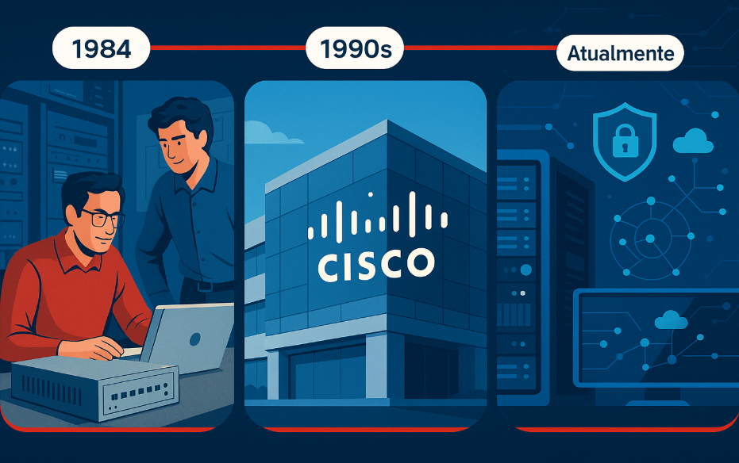

História da Cisco
A Cisco Systems foi fundada em 1984 por Leonard Bosack e Sandy Lerner, dois cientistas da computação da Universidade de Stanford. Eles criaram a empresa com o objetivo de comercializar um roteador que permitisse a comunicação entre diferentes protocolos de rede. Esse dispositivo foi um marco para a evolução da internet.
No final dos anos 80 e início dos anos 90, a Cisco cresceu rapidamente com a popularização da internet. Em 1990, a empresa abriu capital na bolsa de valores e começou uma série de aquisições estratégicas para expandir sua linha de produtos.
Durante os anos 2000, a Cisco se consolidou como uma das maiores empresas de tecnologia do mundo, liderando o mercado de equipamentos de rede. Com o avanço da tecnologia, a empresa passou a investir fortemente em soluções de segurança, colaboração e computação em nuvem.
Hoje, a Cisco é reconhecida globalmente por sua contribuição à infraestrutura da internet e continua sendo uma das líderes em inovação em redes, segurança e serviços digitais.